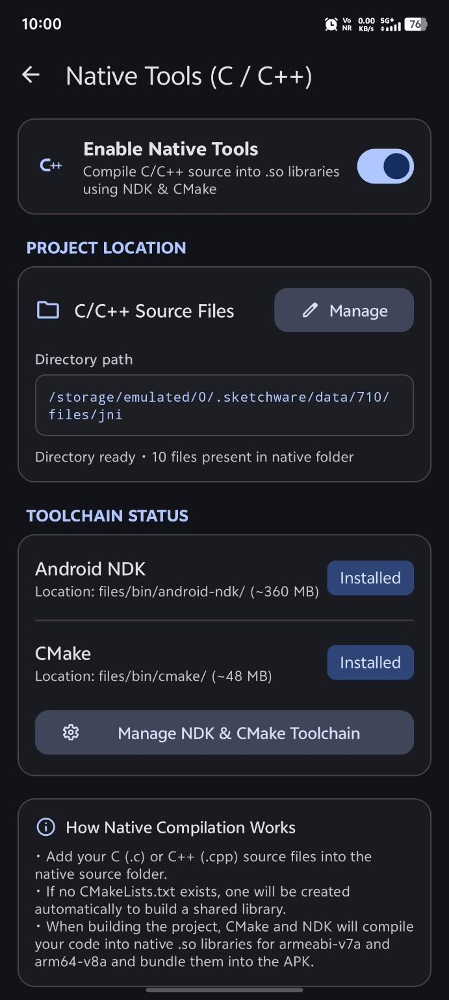
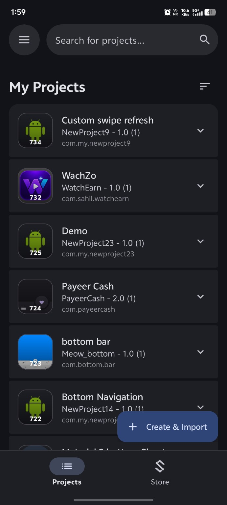
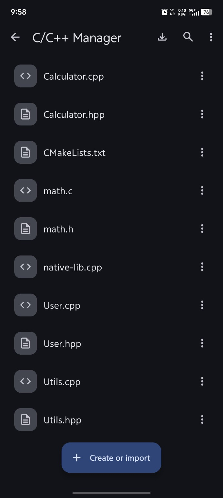
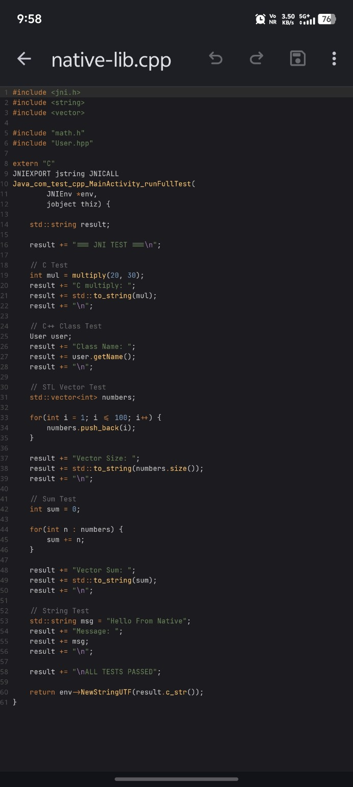
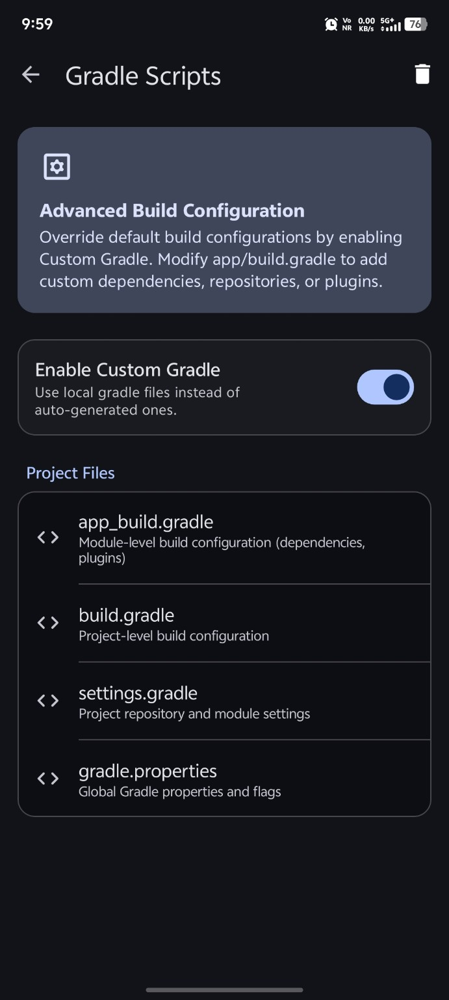
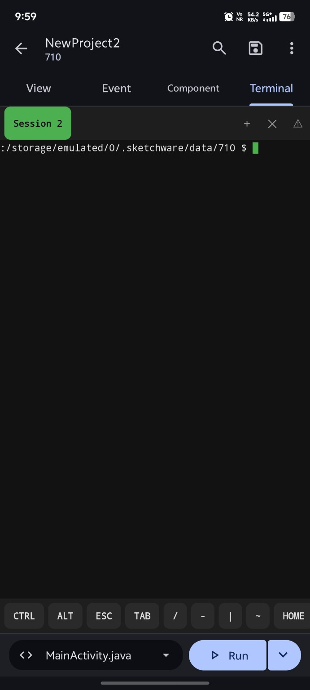
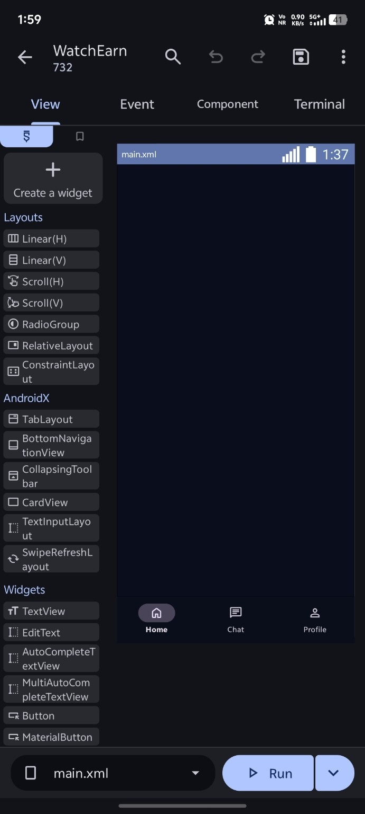

01
NATIVE DEVELOPMENT
C/C++ and CMake
Manage native source files, CMake and the Android NDK from the project instead of leaving the phone.
Sketchware Neo brings project editing, source code, Gradle, native C/C++, terminal tools and Android project utilities into one mobile development environment.

Neo is more than a block editor. The current project includes source editing, native development, Gradle tooling, terminal sessions and project-level utilities.

Manage native source files, CMake and the Android NDK from the project instead of leaving the phone.
Work with Java, Kotlin, C/C++, Groovy, CMake, JSON and Markdown in the source editor.
Edit project build files and keep the build configuration visible and recoverable.
Project-level Android settings stay close to the project they belong to.
Keep project backups and recover versions without depending on a single local copy.





The interface keeps the project, source code, build configuration and terminal close together. The result feels more like an IDE and less like a collection of separate tools.
Sketchware Neo is community-maintained. Source, releases, issues and ongoing development live on GitHub.
Download the current release and see the real workflow on your Android device.
downloadOpen releases